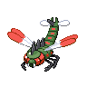

📖 英語版の図鑑説明
Extremely violent. When hunting, it wastes none of its energy, aiming only for prey's most vulnerable spots. Any who manage to tame this Pokémon must be of incredible bravery.
日本語訳
非常に凶暴。獲物の弱点だけを狙い無駄なく仕留めます。飼いならすには並外れた勇気が必要です。
📝 この図鑑文に出てくる英単語
| 英単語 | 意味 | 品詞 | レベル |
|---|---|---|---|
| extremely | 非常に | 副詞 | 高校 |
| violent | 乱暴な | 形容詞 | 高校 |
| hunting | 狩り | 名詞 | 高校 |
| wastes | ごみ(複数形) | 名詞 | 高校 |
| none | ひとつも〜ない | 代名詞 | 高校 |
| prey | えもの | 名詞 | 大学 |
| vulnerable | 弱い、傷つきやすい | 形容詞 | 大学 |
| tame | おとなしい、飼いならす | 形容詞 | 大学 |
文法ポイント who は関係代名詞で、直前の名詞をくわしく説明するまとまりを作っています。人や生き物について説明するときに使います。
when 〜 は「〜するとき」という意味の接続詞。when のまとまりが、もう一方の文がいつ起こるかを表しています。
💡 英語名「Yanmega」の由来
英語名「Yanmega」は、mega-（「巨大な」を表す接頭語）とMeganeura（古代の巨大トンボのメガネウラ）を組み合わせた名前と考えられている。
出典 Bulbapedia
📊 メガヤンマの種族値
HP86
こうげき76
ぼうぎょ86
とくこう116
とくぼう56
すばやさ95
合計 515
❓ よくある質問
- メガヤンマの英語名は？
- メガヤンマの英語名は「Yanmega」です。
- メガヤンマの英語名「Yanmega」の由来は？
- 英語名「Yanmega」は、mega-（「巨大な」を表す接頭語）とMeganeura（古代の巨大トンボのメガネウラ）を組み合わせた名前と考えられている。
- メガヤンマは英語版の図鑑でどう説明されている？
- 「Extremely violent. When hunting, it wastes none of its energy, aiming only for prey's most vulnerable spots. Any who manage to tame this Pokémon must be of incredible bravery.」と書かれています。日本語にすると「非常に凶暴。獲物の弱点だけを狙い無駄なく仕留めます。飼いならすには並外れた勇気が必要です。」という意味です。
メガヤンマは第4世代（シンオウ地方）のポケモンです。第4世代（シンオウ地方）の英語名一覧 →